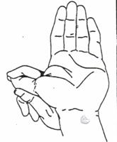
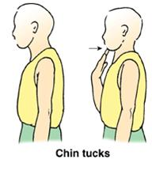

Programmers and designers spend most of their time sitting in front of computers. Effective exercise helps them work better.
Traditional:
When sitting at a computer desk
- Feet touch the ground.
- Arms bent at the elbows.
- Hands should rest on the desk while typing.
- Keyboard and mouse should be within easy reach.
- The display should be at eye level, neither too high nor too low.
- Light should preferably come from above. That is, light should come down from the ceiling.
- Look into the distance every 20 minutes. This can reduce eye fatigue caused by staring at close objects for long periods.
- The mouse should be about the same size as your hand.
- Use a full-size ergonomic keyboard. Personally, I prefer the brands Microsoft and Logitech.

Exercise:
1. Eye exercises
Although there is currently no clear scientific data showing that eye exercises can improve vision, most of these eye movements are still ergonomically sound.
You can also use moisturizing eye drops if your eyes feel dry from staring at the screen all day. Also, make sure there is enough light in the room and office while working. If one day you step out of the office during the day and your eyes sting, it means your office lighting is insufficient.
Working in dim conditions can lead to nearsightedness. Be sure to have enough light.
2. Palm exercises
Palm exercises are very necessary for those who sit at the computer typing all day.

1. Warm-up preparation
As shown in the figure, shake your hands. Doing this for one minute can prevent tight flexor muscles. Imagine you just washed your hands and are shaking them dry.
2. Stretch fingers

Palms up, fingers pointing down, spread apart as far as possible, then close the palms together while keeping the fingers apart throughout the process.
Stretch the thumb

- Point your hand upward, palm facing yourself, then use the other hand to gently pull the thumb downward.
- Hold for 20 seconds.
- Repeat with the other hand.
3. Stretch the hand
- Straighten your arm, with the inside of the wrist facing downward, as shown in the figure.
- Gently spread your fingers, and without causing pain, use the other hand to bend the palm as far as possible.
- Hold for 20 seconds.
- Repeat with the other hand.
4. Reverse hand stretch.

- Place your hand on the edge of the table, palm naturally facing downward, as shown in the figure.
- Use the other hand to grasp this hand, and without causing pain, gently apply pressure up to the maximum you can bear.
- Please note: you will not feel pain, but you should feel the hand stretching.
- Hold for 20 seconds.
- Repeat with the other hand.
3. Neck exercises
Basic stretches to prevent muscle and neck paralysis. This set of stretches not only helps maintain body shape, but can also repair a protruding cervical spine.

Please follow these steps:
- Find a corner in the room, or in the office, and stand about 0.6 meters away from the corner.
- Keep your feet together.
- Place both arms against the wall, elbows slightly lower than the shoulders. (Figure 1)
- The forearms should be fully against the wall. If not, adjust.
- Lean toward the wall as much as possible while keeping your body straight. You will feel a stretch slightly below the neck, as well as in the front of the shoulders and chest.
- Hold for 30 seconds.
This helps align the shoulders, chest, and neck.
4. Chin exercises

The chin tuck is one of the simplest and most effective exercises for relieving neck pain. This exercise can solve problems caused by staring at small text on a screen all day.
This method not only stretches but also strengthens muscles, helping you push your head back into alignment with your shoulders.
To do this exercise, find a wall, then stand straight against it like this.

Place your hand on your chin and push it toward your neck. Hold for 5 seconds, then release. Do this 5 times.
This not only benefits the neck, but also improves posture and helps relax the eyes. Make sure to do it at least 2-3 times a day.
5. Back exercises

Lie down, face upward, with knees bent.
- Bend the knees to the right side.
- Hold for 15 seconds.
- Return to the starting position.
- Bend the knees to the left side.
- Hold for 15 seconds.
- Return to the starting position.
- Do this 5 times.

- Arch your back so that the lower back lifts off the ground. Without causing pain, lift it as high as possible, hold for 5 seconds, then relax.
- Do this 5 times.

- Kneel on the ground, on all fours, as shown in the figure.
- Relax, do not deliberately support the body.
- Arch the back upward, as if someone is pulling it.
- Hold for five seconds.
- Return to the original position.
- Do this 5 times.

1. Sit straight on a stool, then place your right leg over your left leg. 2. Place your left hand against your right leg while twisting your body. 3. Hold for 10 seconds. 4. Do the same in the other direction.

- Sit straight on a stool, pull your shoulders back.
- As shown in the figure.
- Hold for 5 seconds, then release.
6. Leg exercises
In the lounge

- Stand straight, with your legs slightly apart, not too far, but not too close either.
- Keep your face straight while relaxing your chin.
- While keeping your back straight, step forward with your right foot as far as possible.
- Slightly lift your left foot so that the heel rises, but the toes remain on the ground.
- At the same time, bend the knee.
- Repeat with the other foot.
Jumping exercise

1. Stand straight as shown in the figure. 2. When jumping up, raise your hands above your head and let your legs extend naturally, as shown in the second figure. 3. Jump again, then return to the initial position. 4. Repeat 10 times.
Foot exercise

- Place both feet on the stairs, heels hanging off, toes bearing the weight.
- Keep the rest of the body straight, let the heels drop downward, and hold for 10 seconds.
- Rise up onto your toes, hold for 5 seconds.
- Repeat the whole process.
- Do this 5 times.
The above exercises and stretches are very beneficial for software developers and designers.
Original: http://mohammedlakkadshaw.com/blog/10_Must_do_excersies_and_ergonomics_for_software_developers_and_designers.html
Translation: http://www.codeceo.com/article/every-programmer-need-exercise.html